L3 Formation of the Solar SystemL3 Sự hình thành Hệ Mặt Trời
Start hereBắt đầu › L3
We did not watch the Solar System form, so we build a theory and test it against today's evidence and against other planetary systems. A flat rotating disk explains the orderly motions; temperature (the frost line) explains two kinds of planets; collisions explain the oddities; radioactive decay gives the age, 4.6 billion years.Chúng ta không chứng kiến Hệ Mặt Trời hình thành, nên xây dựng một lý thuyết và kiểm tra nó với bằng chứng hôm nay và với các hệ hành tinh khác. Đĩa dẹt quay giải thích chuyển động có trật tự; nhiệt độ (đường băng) giải thích hai loại hành tinh; va chạm giải thích những điều lạ; phân rã phóng xạ cho tuổi, 4,6 tỉ năm.
L3 40 slide pages · 3 formulas · 36 practice questions40 trang slide · 3 công thức · 36 câu luyện tập · Practice this lectureLuyện bài này
Memory hooksMẹo nhớ
How to build a theory of the pastXây dựng lý thuyết về quá khứ
- We did not observe the origin, so theories must match circumstantial evidence: what the Solar System is like today. [L3 p3]Ta không quan sát nguồn gốc, nên lý thuyết phải khớp bằng chứng gián tiếp: Hệ Mặt Trời hôm nay trông thế nào. [L3 tr.3]
- Test a hypothesis by quantitative predictions compared with the Solar System and other systems: pencil-and-paper calculations, then computer models; it must be confirmed by many scientists. [L3 p5]Kiểm tra giả thuyết bằng dự đoán định lượng so với Hệ Mặt Trời và các hệ khác: tính tay rồi mô hình máy tính; phải được nhiều nhà khoa học xác nhận. [L3 tr.5]
- Main points: all planets formed from the same cloud at the same time; some variety is due to chance events such as collisions; discovery of disks and planets around other stars means planet formation is common in the Galaxy. [L3 p3]Ý chính: mọi hành tinh hình thành từ cùng đám mây cùng lúc; một phần sự đa dạng do biến cố ngẫu nhiên như va chạm; phát hiện đĩa và hành tinh quanh sao khác nghĩa là sự hình thành hành tinh phổ biến trong Ngân Hà. [L3 tr.3]
- In a nutshell: Earth, Sun and the rest formed from a cloud of gas and dust about 4.6 billion years ago; planets reflect their distance to the hot proto-Sun; some had big collisions; comets and asteroids are leftover debris. [L3 p4]Tóm lại: Trái Đất, Mặt Trời và phần còn lại hình thành từ đám mây khí và bụi khoảng 4,6 tỉ năm trước; hành tinh phản ánh khoảng cách tới proto-Sun nóng; một số trải qua va chạm lớn; sao chổi và tiểu hành tinh là mảnh vụn còn lại. [L3 tr.4]
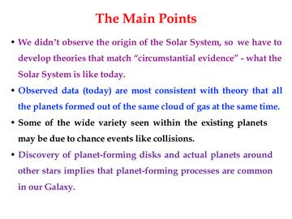
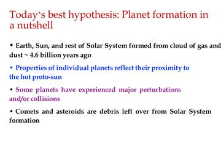
Patterns the theory must explainCác quy luật lý thuyết phải giải thích
- Large bodies move in an orderly way in a plane; two kinds of planets (small rocky terrestrial, large hydrogen-rich Jovian); asteroids and comets live in certain regions; there are exceptions. [L3 p6]Các vật lớn chuyển động có trật tự trong một mặt phẳng; hai loại hành tinh (đá nhỏ - terrestrial, giàu hydro lớn - Jovian); tiểu hành tinh và sao chổi ở những vùng nhất định; có ngoại lệ. [L3 tr.6]
- Orderly motions: the Sun formed in the centre of the nebula (fusion); the planets formed in the rest of the disk. Hence one plane, one direction, the Sun rotates the same way, most moons orbit the same way, most orbits near circular (collisions in the disk). [L3 p12]Chuyển động có trật tự: Mặt Trời hình thành ở tâm tinh vân (nhiệt hạch); hành tinh hình thành trong phần đĩa còn lại. Vì thế: một mặt phẳng, một chiều, Mặt Trời quay cùng chiều, hầu hết vệ tinh quay cùng chiều, hầu hết quỹ đạo gần tròn (va chạm trong đĩa). [L3 tr.12]
- Concept question (no answer on the slide): the material of the Sun was once part of the Big Bang, another star, a molecular cloud, a protostar: all of the above (our reasoning: H and He from the Big Bang, heavier elements from earlier stars, then cloud and protostar stages). [L3 p13, p40]Câu hỏi khái niệm (slide không có đáp án): vật chất của Mặt Trời từng là một phần của Vụ Nổ Lớn, một sao khác, đám mây phân tử, tiền sao: tất cả các ý trên (lập luận của ta: H và He từ Vụ Nổ Lớn, nguyên tố nặng từ các sao trước, rồi giai đoạn mây và tiền sao). [L3 tr.13, 40]


Other stars test the theorySao khác kiểm tra lý thuyết
- With infrared cameras and HST, Kepler, TESS, scientists identified many exoplanetary systems and regions where stars and planets are forming: tests of the nebular hypothesis. [L3 p7]Nhờ camera hồng ngoại và HST, Kepler, TESS, các nhà khoa học xác định nhiều hệ ngoại hành tinh và vùng đang tạo sao, hành tinh: kiểm tra giả thuyết tinh vân. [L3 tr.7]
- Examples on the slides: exoplanetary systems, 'planet(s) or moon(s)?', HR 8799 (12-year time-lapse of four planets), dust continuously replenished by collisions between planetesimals. [L3 p8-11]Ví dụ trên slide: các hệ ngoại hành tinh, 'hành tinh hay vệ tinh?', HR 8799 (time-lapse 12 năm của bốn hành tinh), bụi liên tục được bổ sung nhờ va chạm giữa các planetesimal. [L3 tr.8-11]


Planets form in a diskHành tinh hình thành trong đĩa
- Five steps: (a) flattened cloud of gas and dust; (b) dust settles to the midplane and accumulates into planetesimals; (c) the protosun heats up and its wind blows the gas away; (d) protoplanets grow by accretion; (e) the modern Solar System. [L3 p14]Năm bước: (a) đám mây khí - bụi dẹt; (b) bụi lắng xuống mặt phẳng giữa và tụ lại thành planetesimal; (c) proto-Sun nóng lên, gió của nó thổi khí đi; (d) tiền hành tinh lớn lên bằng tích tụ; (e) Hệ Mặt Trời hiện nay. [L3 tr.14]
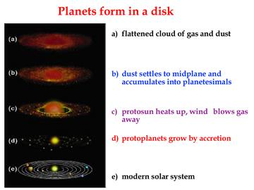
Condensation and the frost lineNgưng tụ và đường băng
- Condensation: gas turns directly to solid (like a snowflake). The nebula slowly cooled; regions near the Sun were warmer; the pattern of condensation followed local temperature. [L3 p15]Ngưng tụ: khí chuyển thẳng thành rắn (như bông tuyết). Tinh vân nguội dần; vùng gần Mặt Trời nóng hơn; kiểu ngưng tụ theo nhiệt độ tại chỗ. [L3 tr.15]
- Inner system: little gas left (too hot, blown away). Outer system: rocky cores accrete gas and dust from the leftover disk (Jupiter as a mini solar system), so outer planets become big. [L3 p16]Hệ trong: còn ít khí (quá nóng, bị thổi đi). Hệ ngoài: lõi đá hút khí và bụi từ đĩa còn lại (Mộc tinh như một hệ Mặt Trời thu nhỏ), nên hành tinh ngoài lớn lên. [L3 tr.16]
- Frost line: inside, too hot for hydrogen compounds to form ices; outside, cold enough. It separates rock-metal planets from gas-ice planets. Diagram: ices of CO₂, CH₄, N₂ and H₂O, metal and rock; labels 2000 K, 300 K, 50 K (the labels do not line up with each substance: read it qualitatively). [L3 p17-20]Đường băng: bên trong quá nóng để hợp chất hydro thành băng; bên ngoài đủ lạnh. Nó phân cách hành tinh đá - kim loại với hành tinh khí - băng. Sơ đồ: băng CO₂, CH₄, N₂ và H₂O, kim loại và đá; nhãn 2000 K, 300 K, 50 K (nhãn không thẳng hàng với từng chất: đọc theo ý chính). [L3 tr.17-20]
- What we do not see now: no disks older than ~10 Myr; gas swept away by strong stellar winds of young stars; Earth's atmosphere is secondary (the original was swept away). [L3 p21]Điều ta không còn thấy: không có đĩa già hơn ~10 triệu năm; khí bị gió sao mạnh của sao trẻ quét sạch; khí quyển Trái Đất là thứ cấp (khí quyển ban đầu bị quét đi). [L3 tr.21]


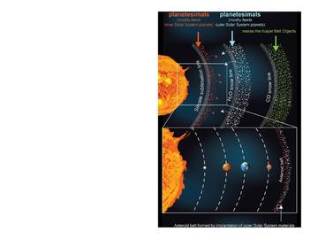

Two scenarios for giant planetsHai kịch bản cho hành tinh khổng lồ
- Core accretion (Boss 2002): dust → pebbles → planetesimals → planets; ice particles outside the frost line; big planets pull in H and He. Time 0.1 → 7 → 10 Myr; the slide's comparison page gives 3 to 10 Myr. [L3 p22-23]Tích tụ lõi (Boss 2002): bụi → sỏi → planetesimal → hành tinh; hạt băng ngoài đường băng; hành tinh lớn hút H và He. Thời gian 0,1 → 7 → 10 triệu năm; trang so sánh của slide ghi 3 đến 10 triệu năm. [L3 tr.22-23]
- Disk instability / gas collapse (Boss 2002): a gravitationally unstable disk forms a self-gravitating planet very fast: 0.1 Myr on p22, but the figure on p25 is labelled t = 1 Myr (the slides differ). [L3 p22, p25]Bất ổn đĩa / sụp đổ khí (Boss 2002): đĩa bất ổn trọng lực tạo hành tinh tự hấp dẫn rất nhanh: 0,1 triệu năm ở tr.22, nhưng hình tr.25 ghi t = 1 triệu năm (slide không thống nhất). [L3 tr.22, 25]
- Disk instability: pros, it can be natural and happens very fast; cons, the disk is usually not unstable, and it does not explain the difference between terrestrial planets, gas giants and ice giants. [L3 p25]Bất ổn đĩa: ưu điểm, có thể tự nhiên và rất nhanh; nhược điểm, đĩa thường không bất ổn, và không giải thích được khác biệt giữa hành tinh đá, khí khổng lồ và băng khổng lồ. [L3 tr.25]
- Moons of the jovian planets probably formed in miniature disks. [L3 p24]Vệ tinh của các hành tinh Mộc có lẽ hình thành trong các đĩa thu nhỏ. [L3 tr.24]
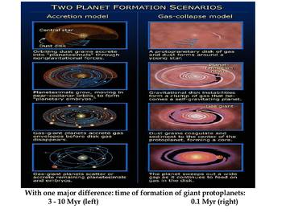

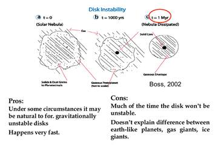
Impacts, the Moon, asteroids and cometsVa chạm, Mặt Trăng, tiểu hành tinh và sao chổi
- Evidence of intense early bombardment: Mercury lost most of its rocky mantle; the Moon formed from a collision with Earth that removed a chunk of the mantle; Venus rotates oddly; Uranus is tilted; a huge impact on Mars (dichotomy of its two hemispheres); crater studies. [L3 p26-27]Bằng chứng về bắn phá mạnh thời kỳ đầu: Thủy tinh mất phần lớn lớp phủ đá; Mặt Trăng hình thành từ va chạm với Trái Đất làm bay một mảng lớp phủ; Kim tinh quay lạ; Thiên Vương nghiêng; một va chạm lớn trên Hỏa tinh (hai bán cầu khác nhau); nghiên cứu hố va chạm. [L3 tr.26-27]
- Heavy bombardment: leftover planetesimals hit other objects in the late stage; water may have come to Earth with icy planetesimals. [L3 p27]Bắn phá dày đặc: planetesimal còn lại va vào các vật khác ở giai đoạn muộn; nước có thể đến Trái Đất cùng planetesimal băng. [L3 tr.27]
- Origin of the Moon, four ideas: (a) formed together with Earth, (b) captured, (c) broke off the Earth, (d) giant impact of Earth with another large body. The slide's earlier page and the molten early Earth point to (d). [L3 p26, p28]Nguồn gốc Mặt Trăng, bốn ý: (a) hình thành cùng Trái Đất, (b) bị bắt giữ, (c) tách ra từ Trái Đất, (d) va chạm khổng lồ giữa Trái Đất và một vật lớn khác. Trang trước của slide và việc Trái Đất sớm nóng chảy chỉ về (d). [L3 tr.26, 28]
- Asteroids are rocky, comets are icy; both are leftovers. Asteroids: leftover rocky planetesimals not accreted. Comets: leftover icy planetesimals; those between the jovian planets were flung into the Oort cloud, those beyond Neptune stayed in the ecliptic plane as the Kuiper belt. Sample-return missions: Genesis, Stardust, Hayabusa. Pluto: asteroids kicked into planetary orbit by a collision? [L3 p30-34]Tiểu hành tinh là đá, sao chổi là băng; cả hai là phần còn lại. Tiểu hành tinh: planetesimal đá còn lại không tích tụ. Sao chổi: planetesimal băng còn lại; những cái nằm giữa các hành tinh Mộc bị ném vào đám mây Oort, những cái ngoài Hải Vương ở lại mặt phẳng hoàng đạo thành vành đai Kuiper. Sứ mệnh mang mẫu về: Genesis, Stardust, Hayabusa. Diêm Vương: tiểu hành tinh bị va chạm đẩy vào quỹ đạo hành tinh? [L3 tr.30-34]
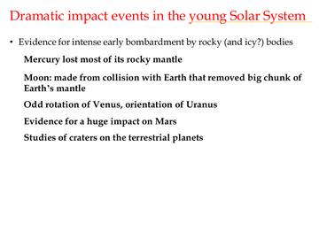
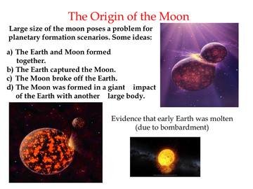
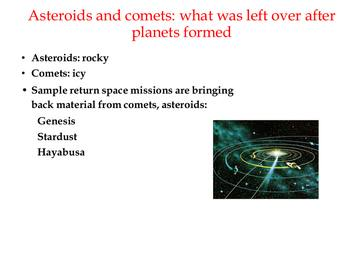

The age of the Solar SystemTuổi của Hệ Mặt Trời
- Radioactive isotopes are unstable and decay into more stable elements: parent and daughter, for example K-40 (parent) → Ar-40 (daughter). [L3 p36]Đồng vị phóng xạ không bền và phân rã thành nguyên tố bền hơn: đồng vị mẹ và con, ví dụ K-40 (mẹ) → Ar-40 (con). [L3 tr.36]
- Half-life: the time for half of a radioactive isotope to decay. The graph marks 1, 2, 3 half-lives at 1.25, 2.5, 3.75 billion years, with the remaining fraction 0.5, 0.25, 0.125. [L3 p37]Chu kỳ bán rã: thời gian để một nửa đồng vị phóng xạ phân rã. Đồ thị đánh dấu 1, 2, 3 chu kỳ bán rã ở 1,25; 2,5; 3,75 tỉ năm, phần còn lại 0,5; 0,25; 0,125. [L3 tr.37]
- Method: measure the stable isotope that exists only because of the decay and the radioactive isotope; the ratio and the half-life give the age of the rock. [L3 p37]Phương pháp: đo đồng vị bền chỉ tồn tại nhờ phân rã và đồng vị phóng xạ; tỉ lệ và chu kỳ bán rã cho tuổi của đá. [L3 tr.37]
- Radiometric dating measures only the time since the rock solidified. Earth's rocks melt and resolidify, so they cannot give the age of the Solar System; use rocks that never melted: meteorites, 4.6 billion years. [L3 p38]Định tuổi phóng xạ chỉ đo thời gian từ khi đá đông đặc. Đá Trái Đất nóng chảy rồi đông lại, nên không cho tuổi Hệ Mặt Trời; dùng đá chưa từng nóng chảy: thiên thạch, 4,6 tỉ năm. [L3 tr.38]
- Results: oldest Earth rocks 4 billion years, Moon 4.4, meteorites 4.6; the first rocks of the Solar System condensed about 4.6 billion years ago. The Universe is 13 to 14 billion years old, so the Solar System is relatively young (about one third of the age). [L3 p39]Kết quả: đá Trái Đất cổ nhất 4 tỉ năm, Mặt Trăng 4,4, thiên thạch 4,6; những đá đầu tiên của Hệ Mặt Trời đông đặc khoảng 4,6 tỉ năm trước. Vũ trụ 13 đến 14 tỉ năm tuổi, nên Hệ Mặt Trời tương đối trẻ (khoảng một phần ba tuổi). [L3 tr.39]
- Formulas: N/N₀ = 2^(−t/T½); with D daughter atoms and P parent atoms now (no daughter at the start), D/P = 2^(t/T½) − 1, so t = T½ log₂(1 + D/P). If D/P = 3 then t = 2 T½ = 2.5 Gyr (T½ = 1.25 Gyr from the graph). [calc]Công thức: N/N₀ = 2^(−t/T½); với D nguyên tử con và P nguyên tử mẹ hiện nay (đầu không có con), D/P = 2^(t/T½) − 1, nên t = T½ log₂(1 + D/P). Nếu D/P = 3 thì t = 2 T½ = 2,5 tỉ năm (T½ = 1,25 tỉ năm từ đồ thị). [tính]
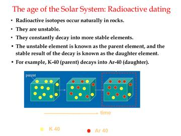


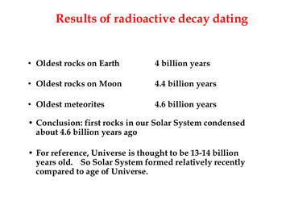
What have we learnedĐã học được gì
- Orderly motion: the nebula spun faster as it contracted (angular momentum), collisions flattened it into a disk. Two planet types: only rock and metals condensed inside the frost line; rock, metals and ices outside; larger planetesimals outside drew in H and He. [L3 p35]Chuyển động có trật tự: tinh vân quay nhanh hơn khi co lại (mômen động lượng), va chạm làm nó dẹt thành đĩa. Hai loại hành tinh: trong đường băng chỉ đá và kim loại ngưng tụ; ngoài đường băng có đá, kim loại và băng; planetesimal lớn hơn ở ngoài hút H và He. [L3 tr.35]
- Where did the Solar System come from: galactic recycling built the elements; we see stars forming in other gas clouds; we have observed disks around young stars. [L3 p40]Hệ Mặt Trời đến từ đâu: tái chế thiên hà tạo ra các nguyên tố; ta thấy sao hình thành trong các đám mây khí khác; ta đã quan sát đĩa quanh sao trẻ. [L3 tr.40]


Formulas explained, symbol by symbolCác công thức, giải thích từng ký hiệu
Click 'next symbol' (or a symbol, or a row): it lights up in the formula and its meaning, unit, implication and numbers appear. Each card shows how the formula is derived, a worked example and the usual mistakes. Cards marked 'not on the slides' are standard physics added here and checked in Python.Bấm 'ký hiệu kế tiếp' (hoặc một ký hiệu, hoặc một hàng): ký hiệu sáng lên trong công thức và hiện ý nghĩa, đơn vị, hệ quả và số liệu. Mỗi thẻ có cách suy ra, ví dụ có số và lỗi thường gặp. Thẻ ghi 'không có trên slide' là vật lý chuẩn được thêm vào và kiểm trong Python.
| SymbolKý hiệu | Name [unit]Tên [đơn vị] | MeaningÝ nghĩa | What it impliesHệ quả | Numbers assignedSố gán |
|---|---|---|---|---|
| atoms leftsố nguyên tử còn lại [—] | Parent atoms present at time t.Số nguyên tử mẹ còn ở thời điểm t. | after 1, 2, 3 half-lives: 0.5, 0.25, 0.125 (slide graph); after 4.6 Gyr: 0.078sau 1, 2, 3 chu kỳ bán rã: 0,5, 0,25, 0,125 (đồ thị slide); sau 4,6 tỉ năm: 0,078 | ||
| initial atomssố nguyên tử ban đầu [—] | Parent atoms when the rock solidified.Số nguyên tử mẹ khi đá đông đặc. | |||
| decay constanthằng số phân rã [Gyr⁻¹] | Probability of decay per atom per unit time.Xác suất phân rã của mỗi nguyên tử trên một đơn vị thời gian. | T½ = 1.25 Gyr → λ = 0.5545 Gyr⁻¹, τ = 1.80 GyrT½ = 1,25 tỉ năm → λ = 0,5545 tỉ năm⁻¹, τ = 1,80 tỉ năm | ||
| half-lifechu kỳ bán rã [Gyr] | Time for half of the atoms to decay.Thời gian để một nửa số nguyên tử phân rã. | The slide graph marks 1.25, 2.5, 3.75 Gyr for K-40.Đồ thị slide đánh dấu 1,25; 2,5; 3,75 tỉ năm cho K-40. | 1.25 Gyr (read from the slide graph)1,25 tỉ năm (đọc từ đồ thị slide) |
In plain wordsNói bằng lời dễ hiểu
Each atom is like a coin that is tossed every instant, and the unstable coins have a fixed chance to 'decay'. You cannot say which atom decays next, but half of a large crowd is gone after one half-life, a half of the rest after the next, and so on: the amount never reaches zero but falls geometrically.Mỗi nguyên tử như một đồng xu được tung mọi lúc, và đồng xu không bền có xác suất cố định 'phân rã'. Không nói được nguyên tử nào phân rã tiếp theo, nhưng một nửa của đám đông lớn mất đi sau một chu kỳ bán rã, một nửa phần còn lại sau chu kỳ kế tiếp, và cứ thế: lượng không bao giờ về không mà giảm theo cấp số nhân.
How it is derivedSuy ra từng bước
- Each atom has the same chance per second to decay, so dN/dt = −λ N.Mỗi nguyên tử có cùng xác suất phân rã mỗi giây, nên dN/dt = −λ N.
- Integrating: N = N₀ e^{−λt}.Tích phân: N = N₀ e^{−λt}.
- At t = T½, N = N₀/2, so e^{−λ T½} = ½ and λ = ln 2 / T½; then N = N₀ 2^{−t/T½}.Tại t = T½, N = N₀/2, nên e^{−λ T½} = ½ và λ = ln 2 / T½; khi đó N = N₀ 2^{−t/T½}.
Check the unitsKiểm tra đơn vị
λ t = (Gyr⁻¹)(Gyr) is dimensionless ✓; 2^(−t/T½) is a pure number ✓.λ t = (Gyr⁻¹)(Gyr) không thứ nguyên ✓; 2^(−t/T½) là một số thuần ✓.
Worked exampleVí dụ có số
After 3.75 Gyr (3 half-lives) the fraction left is (1/2)³ = 0.125, as marked on the slide graph; after 4.6 Gyr: 2^(−4.6/1.25) = 0.078.Sau 3,75 tỉ năm (3 chu kỳ bán rã) phần còn lại là (1/2)³ = 0,125, như đánh dấu trên đồ thị slide; sau 4,6 tỉ năm: 2^(−4,6/1,25) = 0,078.
What if... (feel the formula)Nếu... thì... (cảm nhận công thức)
- After n half-lives: 2⁻ⁿ left: 1/2, 1/4, 1/8, 1/16 ...Sau n chu kỳ bán rã còn 2⁻ⁿ: 1/2, 1/4, 1/8, 1/16 ...
- With T½ = 1.25 Gyr the meteorites (4.6 Gyr = 3.68 half-lives) keep 7.8 % of their K-40.Với T½ = 1,25 tỉ năm, thiên thạch (4,6 tỉ năm = 3,68 chu kỳ bán rã) còn giữ 7,8 % K-40.
- After 10 half-lives about 0.1 % is left: this is why a very old rock needs an isotope with a long half-life.Sau 10 chu kỳ bán rã còn khoảng 0,1 %: vì thế đá rất già cần đồng vị có chu kỳ bán rã dài.
Common mistakesLỗi thường gặp
- Thinking that after two half-lives everything has decayed.Tưởng sau hai chu kỳ bán rã mọi thứ đã phân rã hết.
- Mixing the mean life τ = 1.44 T½ with the half-life.Nhầm thời gian sống trung bình τ = 1,44 T½ với chu kỳ bán rã.
Test yourselfTự kiểm tra
What fraction is left after 5 half-lives?Còn lại bao nhiêu phần sau 5 chu kỳ bán rã?
Show the formulaHiện công thức
Practice problems for this lectureBài tập tương tự của bài này →
| SymbolKý hiệu | Name [unit]Tên [đơn vị] | MeaningÝ nghĩa | What it impliesHệ quả | Numbers assignedSố gán |
|---|---|---|---|---|
| daughter over parentcon trên mẹ [—] | Measured ratio of stable daughter atoms to remaining parent atoms.Tỉ lệ đo được của nguyên tử con bền trên nguyên tử mẹ còn lại. | D/P = 1 means exactly one half-life has passed.D/P = 1 nghĩa là đúng một chu kỳ bán rã đã trôi qua. | D/P = 0.5 → 0.73 Gyr; 1 → 1.25; 3 → 2.5; 7 → 3.75; 15 → 5.00 Gyr; the meteorites (4.6 Gyr): D/P = 11.8D/P = 0,5 → 0,73 tỉ năm; 1 → 1,25; 3 → 2,5; 7 → 3,75; 15 → 5,00 tỉ năm; thiên thạch (4,6 tỉ năm): D/P = 11,8 | |
| half-lifechu kỳ bán rã [Gyr] | (as defined on the previous cards)(như đã định nghĩa ở các thẻ trước) | 1.25 Gyr1,25 tỉ năm | ||
| decay constanthằng số phân rã [Gyr⁻¹] | (as defined on the previous cards)(như đã định nghĩa ở các thẻ trước) | |||
| agetuổi [Gyr] | Time since the rock solidified.Thời gian từ khi đá đông đặc. | Earth rocks reset when they melt: 4 Gyr; Moon 4.4; meteorites 4.6 Gyr (L3 p39).Đá Trái Đất bị đặt lại khi nóng chảy: 4 tỉ năm; Mặt Trăng 4,4; thiên thạch 4,6 tỉ năm (L3 tr.39). |
In plain wordsNói bằng lời dễ hiểu
Count the 'ash' and the 'fuel' in the rock: if the ash (daughter) equals the fuel (parent), exactly one half-life has passed; three times as much ash as fuel means two half-lives; and so on. The ratio D/P is a clock, but it starts only when the rock solidifies and traps the atoms, which is why melted Earth rocks do not give the Solar System's age.Đếm 'tro' và 'nhiên liệu' trong đá: nếu tro (con) bằng nhiên liệu (mẹ) thì đúng một chu kỳ bán rã đã trôi qua; tro gấp ba lần nhiên liệu nghĩa là hai chu kỳ; và cứ thế. Tỉ lệ D/P là một đồng hồ, nhưng nó chỉ bắt đầu khi đá đông đặc và giữ các nguyên tử, vì thế đá Trái Đất đã nóng chảy không cho tuổi của Hệ Mặt Trời.
How it is derivedSuy ra từng bước
- Assume no daughter atoms when the rock solidified and a closed system; then D = N₀ − P and P = N₀ 2^{−t/T½}.Giả sử không có nguyên tử con khi đá đông đặc và hệ kín; khi đó D = N₀ − P và P = N₀ 2^{−t/T½}.
- D/P = (N₀ − P)/P = N₀/P − 1 = 2^{t/T½} − 1.D/P = (N₀ − P)/P = N₀/P − 1 = 2^{t/T½} − 1.
- Solve for t: t = T½ log₂(1 + D/P).Giải theo t: t = T½ log₂(1 + D/P).
- The slide draws K-40 → Ar-40 as a complete conversion; in reality only about 11 % becomes Ar-40 (not on the slides, not checked here), so a real K-Ar age needs the branching ratio.Slide vẽ K-40 → Ar-40 như chuyển hoàn toàn; thực tế chỉ khoảng 11 % thành Ar-40 (không có trên slide, chưa kiểm ở đây), nên tuổi K-Ar thật cần tỉ lệ nhánh.
Check the unitsKiểm tra đơn vị
D/P is dimensionless; log₂(1 + D/P) is a number of half-lives; × T½ gives Gyr ✓.D/P không thứ nguyên; log₂(1 + D/P) là số chu kỳ bán rã; × T½ cho tỉ năm ✓.
Worked exampleVí dụ có số
A meteorite with D/P = 7 and T½ = 1.25 Gyr: t = 1.25 × log₂ 8 = 1.25 × 3 = 3.75 Gyr. The 4.6 Gyr of the real meteorites correspond to D/P = 11.8.Một thiên thạch có D/P = 7 và T½ = 1,25 tỉ năm: t = 1,25 × log₂ 8 = 1,25 × 3 = 3,75 tỉ năm. 4,6 tỉ năm của thiên thạch thật ứng với D/P = 11,8.
What if... (feel the formula)Nếu... thì... (cảm nhận công thức)
- D/P = 1 → 1 half-life; 3 → 2; 7 → 3; 15 → 4 (always 2ⁿ − 1).D/P = 1 → 1 chu kỳ; 3 → 2; 7 → 3; 15 → 4 (luôn là 2ⁿ − 1).
- If the rock already had some daughter atoms when it formed, the true age is younger than the formula says.Nếu đá đã có sẵn một ít nguyên tử con khi hình thành thì tuổi thật trẻ hơn công thức cho.
- For D/P much smaller than 1, t ≈ T½ (D/P)/ln 2: the age is nearly proportional to D/P.Với D/P nhỏ hơn nhiều so với 1, t ≈ T½ (D/P)/ln 2: tuổi gần như tỉ lệ với D/P.
Common mistakesLỗi thường gặp
- Using D/P as the number of half-lives (it is 2^n − 1).Dùng D/P làm số chu kỳ bán rã (nó là 2^n − 1).
- Dating Earth rocks to get the Solar System age.Định tuổi đá Trái Đất để lấy tuổi Hệ Mặt Trời.
Test yourselfTự kiểm tra
A rock has D/P = 15: how many half-lives?Một đá có D/P = 15: bao nhiêu chu kỳ bán rã?
Show the formulaHiện công thức
Practice problems for this lectureBài tập tương tự của bài này →
| SymbolKý hiệu | Name [unit]Tên [đơn vị] | MeaningÝ nghĩa | What it impliesHệ quả | Numbers assignedSố gán |
|---|---|---|---|---|
| equilibrium temperaturenhiệt độ cân bằng [K] | Temperature of a dark body that absorbs sunlight and re-emits it as a blackbody.Nhiệt độ của vật đen hấp thụ ánh sáng Mặt Trời và phát lại như vật đen. | Water ice needs about 150 K (our choice for the illustration): d ≈ 3.4 AU.Băng nước cần khoảng 150 K (lựa chọn của ta cho minh họa): d ≈ 3,4 AU. | 1 AU → 278 K; 3 AU → 161 K; 5.2 AU → 122 K; 30 AU → 51 K1 AU → 278 K; 3 AU → 161 K; 5,2 AU → 122 K; 30 AU → 51 K | |
| solar luminosityđộ trưng Mặt Trời [erg s⁻¹] | Power radiated by the Sun.Công suất bức xạ của Mặt Trời. | 3.83×10³³ erg/s3,83×10³³ erg/s | ||
| distance from the Sunkhoảng cách tới Mặt Trời [AU] | T falls as d^-1/2.T giảm theo d^-1/2. | The frost line is where T drops below the freezing point of the ices (L3 p18).Đường băng là nơi T giảm xuống dưới điểm đóng băng của các chất băng (L3 tr.18). |
In plain wordsNói bằng lời dễ hiểu
A dark body in space warms up until it radiates as much energy as it absorbs. Farther from the Sun the sunlight is weaker (it spreads over a sphere, 1/d²) so the balance temperature is lower, and because radiation goes as T⁴ the temperature falls only as d^(−1/2).Một vật tối trong không gian nóng lên cho tới khi nó bức xạ bằng đúng năng lượng nó hấp thụ. Càng xa Mặt Trời ánh sáng càng yếu (trải ra trên mặt cầu, 1/d²) nên nhiệt độ cân bằng càng thấp, và vì bức xạ tỉ lệ T⁴ nên nhiệt độ chỉ giảm theo d^(−1/2).
How it is derivedSuy ra từng bước
- Absorbed power = L☉ π R² / (4π d²) (no albedo).Công suất hấp thụ = L☉ π R² / (4π d²) (không có albedo).
- Emitted power = 4π R² σ T⁴.Công suất phát = 4π R² σ T⁴.
- Equal powers give T = (L☉ / (16 π σ d²))^¼ = 278 K (d/AU)^-½ (the coefficient is recomputed from L☉, σ and the AU in the verification script).Hai công suất bằng nhau cho T = (L☉ / (16 π σ d²))^¼ = 278 K (d/AU)^-½ (hệ số được tính lại từ L☉, σ và AU trong script kiểm).
Check the unitsKiểm tra đơn vị
(erg s⁻¹ / (erg s⁻¹ cm⁻² K⁻⁴ · cm²))^¼ = (K⁴)^¼ = K ✓.(erg s⁻¹ / (erg s⁻¹ cm⁻² K⁻⁴ · cm²))^¼ = (K⁴)^¼ = K ✓.
Worked exampleVí dụ có số
At 1 AU 278 K and at 30 AU 51 K: close to the 300 K and 50 K labels of L3 p17, but the real young disk was warmer and its profile different: use it only to see the trend.Ở 1 AU 278 K và ở 30 AU 51 K: gần với nhãn 300 K và 50 K của L3 tr.17, nhưng đĩa trẻ thật nóng hơn và có profile khác: chỉ dùng để thấy xu hướng.
What if... (feel the formula)Nếu... thì... (cảm nhận công thức)
- Distance ×4 → T ÷2.Khoảng cách ×4 → T ÷2.
- 1 AU 278 K, 5.2 AU 122 K, 30 AU 51 K: the order of the 300 K to 50 K labels of L3 p17. The true Earth (288 K) differs because of albedo and the greenhouse effect; the young disk was a different case: use only the trend. [ext]1 AU 278 K, 5,2 AU 122 K, 30 AU 51 K: cùng bậc với nhãn 300 K đến 50 K của L3 tr.17. Trái Đất thật (288 K) khác vì albedo và hiệu ứng nhà kính; đĩa trẻ là trường hợp khác: chỉ dùng xu hướng. [ngoài slide]
- Water ice needs about 150 K (our choice for the illustration): that distance is ≈ 3.4 AU. The slides place the frost line qualitatively (L3 p18-19).Băng nước cần khoảng 150 K (lựa chọn của ta cho minh họa): khoảng cách đó ≈ 3,4 AU. Slide đặt đường băng định tính (L3 tr.18-19).
Common mistakesLỗi thường gặp
- Treating T_eq as the temperature of the young disk in an exam answer.Coi T_eq là nhiệt độ của đĩa trẻ trong bài thi.
Test yourselfTự kiểm tra
At what distance is T = 139 K?Ở khoảng cách nào thì T = 139 K?
Show the formulaHiện công thức
Practice problems for this lectureBài tập tương tự của bài này →
Exercises of this lecture, to redo yourselfBài tập của bài này, để tự làm lại
From the lecturer's slidesTừ slide của cô
L3Exercise on the slideBài tập trên slideConcept question: the material of the SunCâu hỏi khái niệm: vật chất của Mặt Trời · L3 p13
Concept Question: The material that makes up the Sun was once part of: the Big Bang / another star / a molecular cloud / a protostar / all of the above.Câu hỏi khái niệm: Vật chất tạo nên Mặt Trời từng là một phần của: Vụ Nổ Lớn / một sao khác / đám mây phân tử / tiền sao / tất cả các ý trên.
Try it yourself first, then open the answer.Hãy tự làm trước, rồi mở đáp án.
Show the short answerHiện đáp án ngắn
Show the full solutionHiện lời giải đầy đủ
- The slide gives no answer; this is our reasoning, based on L3 p40 (galactic recycling) and L2 (star birth).Slide không có đáp án; đây là lập luận của ta, dựa trên L3 tr.40 (tái chế thiên hà) và L2 (sao ra đời).
- Hydrogen and most helium were made in the Big Bang.Hydro và phần lớn heli được tạo ra trong Vụ Nổ Lớn.
- Heavier elements were built in earlier stars and returned to space (galactic recycling).Nguyên tố nặng hơn được tạo trong các sao trước và trả về không gian (tái chế thiên hà).
- That gas collected in a molecular cloud, a dense core collapsed into a protostar, which became the Sun.Khí đó tụ lại trong đám mây phân tử, lõi đặc sụp đổ thành tiền sao, rồi thành Mặt Trời.
L3Question on the slideCâu hỏi trên slideHow can we make a theory of something that happened more than 4 billion years ago?Làm sao xây dựng lý thuyết về một việc đã xảy ra hơn 4 tỉ năm trước? · p2

Try it yourself first, then open the answer.Hãy tự làm trước, rồi mở đáp án.
Show the short answerHiện đáp án ngắn
L3Question on the slideCâu hỏi trên slideHow does one test a hypothesis?Kiểm tra một giả thuyết bằng cách nào? · p5

Try it yourself first, then open the answer.Hãy tự làm trước, rồi mở đáp án.
Show the short answerHiện đáp án ngắn
L3Question on the slideCâu hỏi trên slideWhat are the patterns we are trying to explain?Những quy luật nào ta đang cố giải thích? · p2, p6
Try it yourself first, then open the answer.Hãy tự làm trước, rồi mở đáp án.
Show the short answerHiện đáp án ngắn
L3Question on the slideCâu hỏi trên slideHow do stars form?Sao hình thành thế nào? · p2
Try it yourself first, then open the answer.Hãy tự làm trước, rồi mở đáp án.
Show the short answerHiện đáp án ngắn
L3Question on the slideCâu hỏi trên slideWhat can we learn from observations of other stars?Ta học được gì từ quan sát các sao khác? · p7
Try it yourself first, then open the answer.Hãy tự làm trước, rồi mở đáp án.
Show the short answerHiện đáp án ngắn
L3Question on the slideCâu hỏi trên slidePlanet(s) or Moon(s)? (the picture compares Jupiter and its major moons, the TRAPPIST-1 system and the inner Solar System)Hành tinh hay vệ tinh? (hình so sánh Sao Mộc và các vệ tinh lớn, hệ TRAPPIST-1 và Hệ Mặt Trời trong) · p9
Try it yourself first, then open the answer.Hãy tự làm trước, rồi mở đáp án.
Show the short answerHiện đáp án ngắn
L3Question on the slideCâu hỏi trên slideThe origin of the Moon: (a) the Earth and Moon formed together, (b) the Earth captured the Moon, (c) the Moon broke off the Earth, (d) the Moon formed in a giant impact of the Earth with another large body. Which one do the slides support?Nguồn gốc Mặt Trăng: (a) Trái Đất và Mặt Trăng hình thành cùng nhau, (b) Trái Đất bắt giữ Mặt Trăng, (c) Mặt Trăng tách ra từ Trái Đất, (d) Mặt Trăng hình thành trong va chạm khổng lồ của Trái Đất với một vật lớn khác. Slide ủng hộ ý nào? · p28
Try it yourself first, then open the answer.Hãy tự làm trước, rồi mở đáp án.
Show the short answerHiện đáp án ngắn
L3Question on the slideCâu hỏi trên slidePluto: asteroids that were kicked into planetary orbit by a collision?Diêm Vương: các tiểu hành tinh bị va chạm đẩy vào quỹ đạo hành tinh? · p34
Try it yourself first, then open the answer.Hãy tự làm trước, rồi mở đáp án.
Show the short answerHiện đáp án ngắn
L3Question on the slideCâu hỏi trên slideWhat caused the orderly patterns of motion in our solar system?Điều gì gây ra các quy luật chuyển động có trật tự trong hệ Mặt Trời của ta? · p35, p40
Try it yourself first, then open the answer.Hãy tự làm trước, rồi mở đáp án.
Show the short answerHiện đáp án ngắn
L3Question on the slideCâu hỏi trên slideWhy are there two major types of planets?Vì sao có hai loại hành tinh chính? · p35
Try it yourself first, then open the answer.Hãy tự làm trước, rồi mở đáp án.
Show the short answerHiện đáp án ngắn
L3Question on the slideCâu hỏi trên slideWhere did the solar system come from?Hệ Mặt Trời đến từ đâu? · p40
Try it yourself first, then open the answer.Hãy tự làm trước, rồi mở đáp án.
Show the short answerHiện đáp án ngắn
Practice calculations (answers computed and checked)Bài tính luyện tập (đáp án đã tính và kiểm)
L3Practice calculationBài tính luyện tậpA meteorite has D/P = 0.5 and T½ = 1.25 Gyr. Find its age. Then give D/P for an age of 5 Gyr.Một thiên thạch có D/P = 0,5 và T½ = 1,25 tỉ năm. Tìm tuổi. Rồi cho D/P ứng với tuổi 5 tỉ năm.
Try it yourself first, then open the answer.Hãy tự làm trước, rồi mở đáp án.
Show the short answerHiện đáp án ngắn
Show the stepsHiện các bước
- t = 1.25 log₂(1.5) = 0.731 Gyr.t = 1,25 log₂(1,5) = 0,731 tỉ năm.
- 5 Gyr = 4 half-lives: D/P = 2⁴ − 1 = 15 (so D/P = 15 gives 5.0 Gyr).5 tỉ năm = 4 chu kỳ bán rã: D/P = 2⁴ − 1 = 15 (vậy D/P = 15 cho 5,0 tỉ năm).
L3Practice calculationBài tính luyện tậpWhat fraction of K-40 is left after 4.6 Gyr and what D/P does it give?Còn lại bao nhiêu phần K-40 sau 4,6 tỉ năm và nó cho D/P bằng bao nhiêu?
Try it yourself first, then open the answer.Hãy tự làm trước, rồi mở đáp án.
Show the short answerHiện đáp án ngắn
Show the stepsHiện các bước
- 4.6 / 1.25 = 3.68 half-lives.4,6 / 1,25 = 3,68 chu kỳ bán rã.
- P/P₀ = 2^−3.68 = 0.078; D/P = 1/P − 1 ≈ 11.8.P/P₀ = 2^−3,68 = 0,078; D/P = 1/P − 1 ≈ 11,8.
L3Practice calculationBài tính luyện tậpAt what distance does the blackbody temperature fall to 150 K, and what is it at Jupiter (5.2 AU)?Ở khoảng cách nào nhiệt độ vật đen giảm còn 150 K, và ở Sao Mộc (5,2 AU) là bao nhiêu?
Try it yourself first, then open the answer.Hãy tự làm trước, rồi mở đáp án.
Show the short answerHiện đáp án ngắn
Show the stepsHiện các bước
- d = (278 K / 150 K)² = 3.44 AU.d = (278 K / 150 K)² = 3,44 AU.
- T(5.2 AU) = 278 / √5.2 = 122 K.T(5,2 AU) = 278 / √5,2 = 122 K.
Quick Q and AHỏi đáp nhanh
Why do planets orbit in one plane and one direction?Vì sao các hành tinh quay trong một mặt phẳng và một chiều?
The nebula spun faster as it contracted (conservation of angular momentum) and collisions flattened it into a disk; planets formed in that disk. [L3 p12, p35]Tinh vân quay nhanh hơn khi co lại (bảo toàn mômen động lượng) và va chạm làm nó dẹt thành đĩa; hành tinh hình thành trong đĩa đó. [L3 tr.12, 35]
Why two types of planets?Vì sao có hai loại hành tinh?
The frost line: only rock and metal condense inside it; outside, ices also condense, planetesimals grow larger and capture H and He. [L3 p18-19, p35]Đường băng: bên trong chỉ đá và kim loại ngưng tụ; bên ngoài có thêm băng, planetesimal lớn hơn và bắt H, He. [L3 tr.18-19, 35]
Compare core accretion and disk instability.So sánh tích tụ lõi và bất ổn đĩa.
Core accretion builds a solid core first then pulls in gas, slowly (3 to 10 Myr); disk instability collapses a gas clump directly, very fast (0.1 Myr) but needs an unstable disk and does not explain the planet types. [L3 p22-25]Tích tụ lõi dựng lõi rắn trước rồi hút khí, chậm (3 đến 10 triệu năm); bất ổn đĩa làm cục khí sụp đổ trực tiếp, rất nhanh (0,1 triệu năm) nhưng cần đĩa bất ổn và không giải thích các loại hành tinh. [L3 tr.22-25]
How do we know the age of the Solar System?Làm sao biết tuổi Hệ Mặt Trời?
Radioactive dating of meteorites (rocks that never melted): about 4.6 billion years; Earth's rocks only give the time since they last solidified. [L3 p36-39]Định tuổi phóng xạ thiên thạch (đá chưa từng nóng chảy): khoảng 4,6 tỉ năm; đá Trái Đất chỉ cho thời gian từ lần đông đặc cuối. [L3 tr.36-39]
Exam checklist: points you must mentionDanh sách ôn thi: các ý phải nêu
- The main points: circumstantial evidence; same cloud, same time; collisions; planet formation is common.Các ý chính: bằng chứng gián tiếp; cùng đám mây, cùng lúc; va chạm; hình thành hành tinh là phổ biến.
- Orderly motions and their cause: angular momentum + disk (five listed facts).Chuyển động có trật tự và nguyên nhân: mômen động lượng + đĩa (năm sự kiện nêu ra).
- Frost line: inside rock and metal only, outside ices too, gas giants capture H and He.Đường băng: bên trong chỉ đá và kim loại, bên ngoài có băng, khí khổng lồ bắt H và He.
- Core accretion (3 to 10 Myr) versus disk instability (0.1 Myr): pros and cons.Tích tụ lõi (3 đến 10 triệu năm) so với bất ổn đĩa (0,1 triệu năm): ưu và nhược.
- Impacts: Mercury, Moon (giant impact), Venus, Uranus, Mars; asteroids rocky, comets icy; Kuiper belt, Oort cloud.Va chạm: Thủy tinh, Mặt Trăng (va chạm khổng lồ), Kim tinh, Thiên Vương, Hỏa tinh; tiểu hành tinh là đá, sao chổi là băng; vành đai Kuiper, đám mây Oort.
- Radioactive dating: formula, half-life graph, why meteorites (4.6 Gyr) and not Earth rocks.Định tuổi phóng xạ: công thức, đồ thị chu kỳ bán rã, vì sao thiên thạch (4,6 tỉ năm) mà không phải đá Trái Đất.
Lecture slides of this module (use the arrow keys)Slide của module này (dùng phím mũi tên)
Self-check: 10 random questionsTự kiểm tra: 10 câu ngẫu nhiên
[L2 p9] = lecture L2, slide page 9. [calc] = computed here and checked in Python. [ext] = not on the slides.[L2 tr.9] = bài L2, trang slide 9. [tính] = tính ở đây và kiểm trong Python. [ngoài slide] = không có trên slide.